ARACAJU
Um pouco de nossa história
Nossa bela cidade recebeu esse nome devido a uma união entre a palavra ‘ará’, que tem o significado de ‘papagaio‘ e também ‘acayú’ que tem o significado de ‘fruto do cajueiro’, mas podemos encontrar outras versões a respeito. Aracaju que se vista de cima, lembra um tabuleiro de xadrez, nasceu em 1855 por causa de alguns motivos econômicos e hoje é reconhecida como uma das mais atraentes rotas de turismo do Nordeste.
Algumas das recordaçõesde nossa cidade
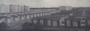
ANTIGO BAIRRO AUGUSTO FRANCO
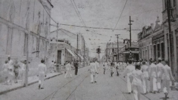
RUA JOÃO PESSOA-ANOS 30
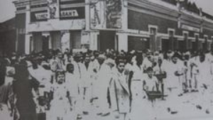
CINEMA GUARANI-1930
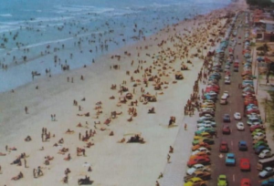
ATALAIA 1970
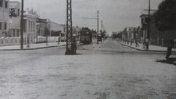
BOND NA AVENIDA MARUIM ANOS 50
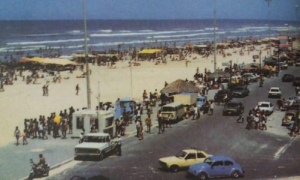
ATALAIA 1970
Alguns eventos que acontecem em nossa cidade
ARRAIÁ DO POVO ACONTEÇE NA HORLA DE ATALAIA
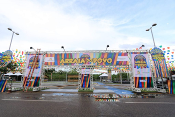
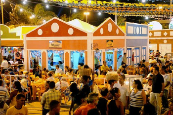
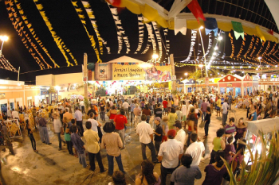
FORRÓ CAJU ACONTEÇE NA PRAÇA DE EVENTOS DO MERCADO CENTRAL
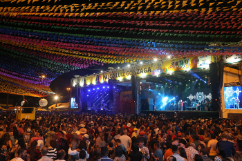
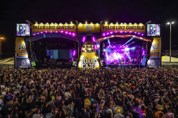
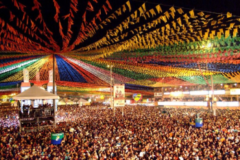